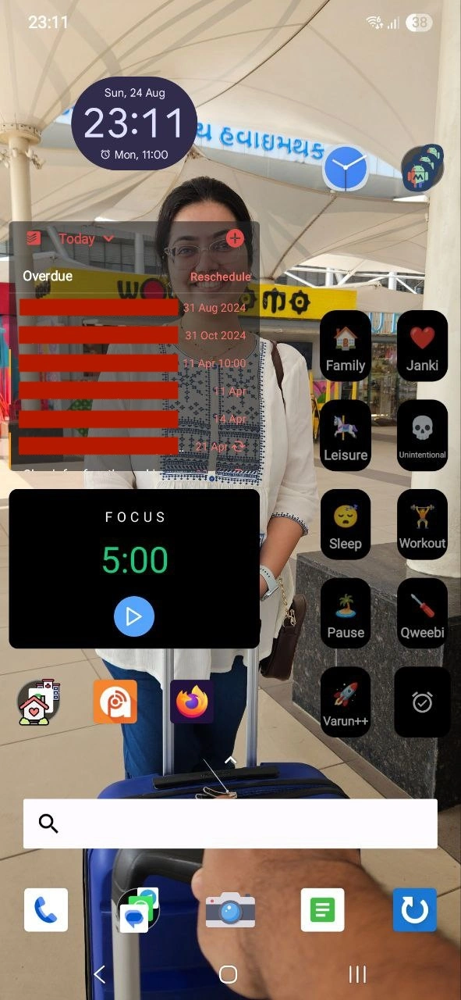

Recently I saw Jedda's post on her phone home screen and thought I should also try something like that. Here we go:
Starting from the top-left, we have the usual clock widget which also opens my alarms when clicked. On the right of it we have a clock-like icon which opens a Tasker action which allows me to input a time and then sets 3 alarms at 15 min intervals starting from the entered time.
The three similar looking icons clubbed together on the top-right are display density controls made using MacroDroid. They allow me to set at three pre-set densities so that I can quickly make the display either more easily readable or make it contain more content.
Then the 10 widgets below those are my time-tracker shortcut widgets. I try to track all my time, mostly to discourage me from sinking my time where I don't want to. You can refer to this Cortex podcast episode to understand how that goes.
Then on the left the largest widget is for Todoist, my task-management application of choice (please ignore the long overdue tasks). Below Todoist is Focusmeter, my pomodoro timer, widget.
Below Focusmeter on the left edge is my collection of navigation apps and shortcuts. I have Google Maps and My Places, and I also have three shortcuts for directly opening driving directions to my frequently visited places. Besides the navigation folder, I have my podcasts application Podcast Addict, which is the best podcast listening app in my opinion. The third one is Firefox, my choice of mobile (and desktop) browser.
Finally, in the dock I have camera in the centre. On the left we have Phone and communications apps. And on the right we have my bookmarking app and my habit tracking app called Loop.
To launch any application not on my home-screen is generally launched by searching for it using the search bar seen just above the dock.